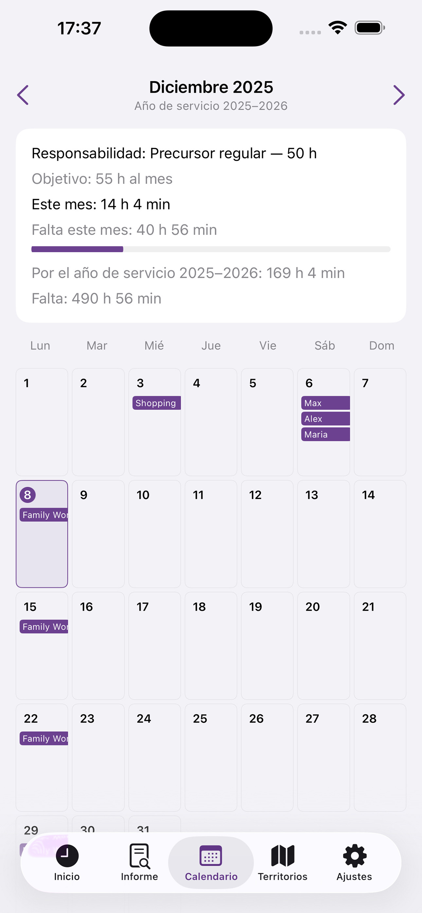
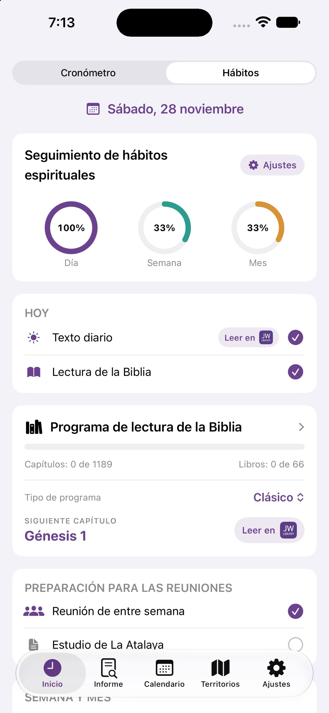
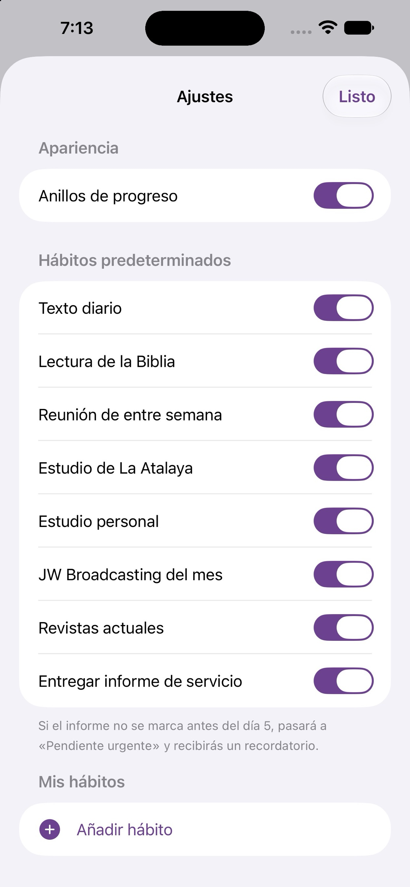
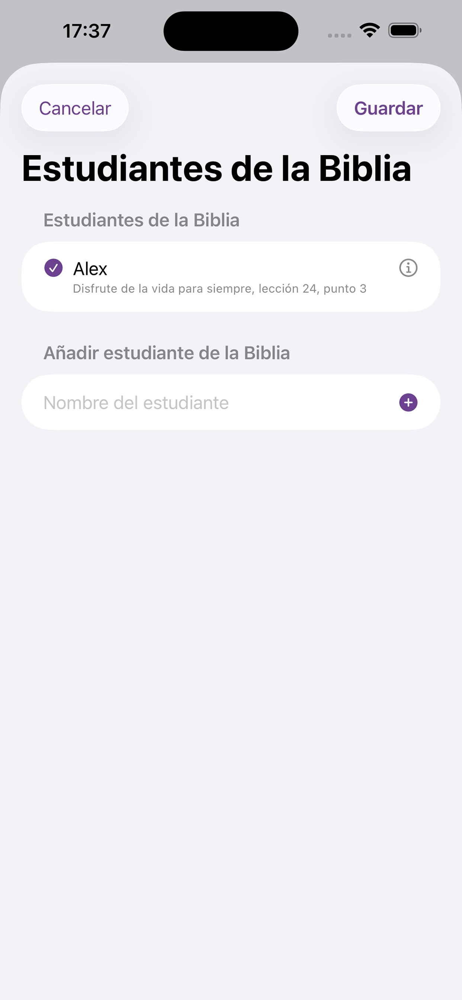
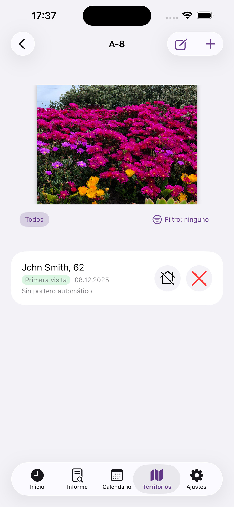
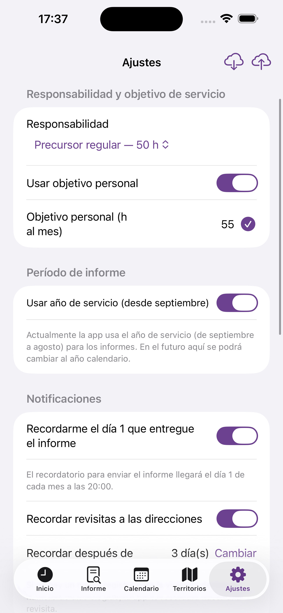
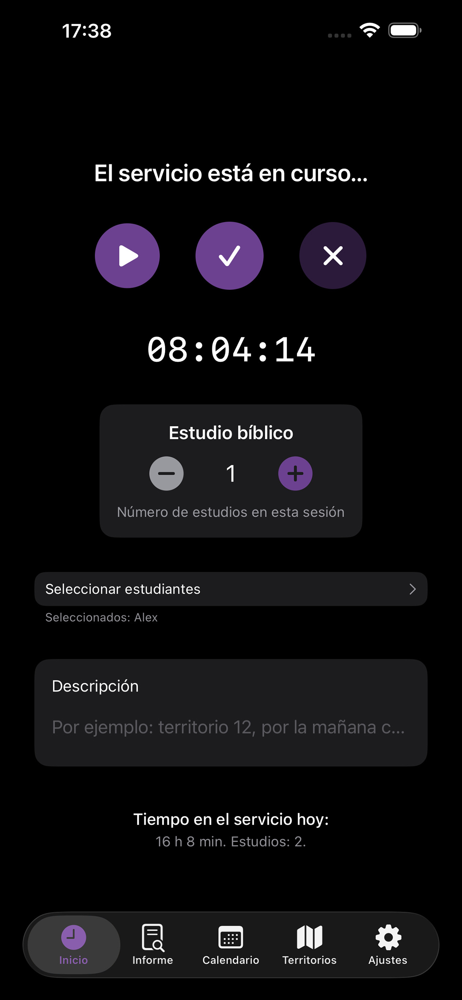

1. Temporizador de ministerio en vivo
Registra tu tiempo al segundo, pausa o guarda en el informe con un toque, añade cursos bíblicos de la sesión, selecciona al estudiante y escribe notas del territorio.
App gratuita y privada para Testigos de Jehová en iPhone y iPad: temporizador con widgets, informe mensual, horario de precursor, calendario, territorios personales, revisitas, cursos bíblicos, hábitos espirituales y lectura de la Biblia.



Capturas reales de la aplicación en español. Explora las 8 pantallas: desde el temporizador y los cursos bíblicos hasta el calendario de precursor, territorios y modo oscuro OLED.








Diseñado para publicadores, precursores auxiliares, precursores regulares y especiales.
Inicia el contador desde la pantalla de inicio o bloqueo y síguelo en tiempo real en la Dynamic Island.
Vincula tus estudiantes a cada sesión del informe y lleva el control exacto de la lección actual.
Compatible con metas de 15, 30, 50, 90 y 100 horas, además de metas mensuales personalizadas.
Planifica tus salidas al ministerio y la Adoración en Familia, y convierte planes en registros del informe deslizando el dedo.
Organiza calles y apartamentos, adjunta fotos, busca por nombre o dirección y recibe avisos para volver a visitar.
Sin cuentas ni servidores externos. Tus datos están solo en tu iPhone/iPad con respaldo fácil en iCloud Drive.
Comparativa entre apuntes en papel, aplicaciones antiguas y JW Ministry 1.8.
| Función | Papel / Libreta | Apps Antiguas | JW Ministry 2.0.1 |
|---|---|---|---|
| Temporizador en vivo en pantalla bloqueada y Dynamic Island | No | No | Sí (Live Activities) |
| Cálculo de metas de precursor (15, 30, 50 h) y año de servicio (600 h) | Manual | Parcial | Automático + Meta personal |
| Comparación Plan vs. Real en Calendario y deslizar al Informe | No | No | Con un solo gesto |
| Generador de edificios + Fotos del territorio y 10 colores | Tarjetas de papel | Solo texto | Tarjetas visuales + Búsqueda |
| Recordatorios de revisitas y aviso el día 1 para enviar el informe | No | Básico | Notificaciones inteligentes |
| Privacidad 100% local y copia de seguridad completa en iCloud Drive | Fácil de perder | Falla al cambiar de iPhone | 100% Offline y seguro |
| Optimizado para el último iOS, iPad, modo OLED y 35+ idiomas | — | Sin soporte | Diseño nativo SwiftUI |
Control de horas, horario de precursor y registro de territorios personales durante todo el año de servicio 2025–2026 y 2026–2027.
Lleva el control exacto de tu meta mensual de 50 horas y del objetivo anual de 600 horas durante el año de servicio de septiembre a agosto. Puedes definir una meta personal mensual (por ejemplo, 55 horas), planificar tu horario en el Calendario y comparar las horas planeadas con las horas reales informadas.
En meses de campañas especiales, visita del superintendente de circuito o temporada de la Conmemoración, cambia tu rol a Precursor Auxiliar de 15 o 30 horas con un toque. Activa el recordatorio automático el día 1 de cada mes a las 20:00 para enviar puntualmente tu informe de predicación.
Crea tarjetas de territorios con foto del mapa, clasifícalas con 10 colores y genera edificios de apartamentos por portales y pisos en segundos. Anota «Primera visita», «No en casa» o «No visitar», busca por dirección o nombre del amo de casa y recibe notificaciones para hacer tus revisitas.
Registra a cada estudiante de la Biblia con su progreso en el libro «¡Disfrute de la vida para siempre!» (lección y punto). Diseñada nativamente para iPhone y iPad con widgets, Live Activities y modo oscuro OLED.
Lo que dicen los hermanos que usan JW Ministry en su predicación diaria.
“Ver la suma de horas planeadas en el Calendario comparada con las horas reales me ayuda muchísimo a cumplir mis 50 horas cada mes sin estrés.”
“El temporizador en la pantalla bloqueada y pasar un plan del Calendario al Informe deslizando el dedo es comodísimo. Totalmente gratis y sin anuncios.”
“El generador de edificios y el buscador de direcciones en los territorios personales hacen que anotar las revisitas y los 'No en casa' sea rapidísimo.”
La aplicación se adapta automáticamente al idioma de tu iPhone o iPad:
JW Ministry es gratuita, sin anuncios ni suscripciones. Si te ayuda en tu ministerio, puedes apoyar el mantenimiento y la licencia anual de Apple Developer:
Donación rápida con tarjeta o Apple Pay mediante Boosty o Patreon:
Transferencia directa a la billetera del desarrollador:
TQQxYhThQGngj887Lvq9TnKtyyYMcUDFNw

UQBNBroTUyMG0YqgiHGXwVKO_rKe5d2y7gXqvICREjBwuKYk

En la pestaña Calendario puedes armar tu horario de precursor regular (50 horas al mes / 600 al año de servicio) o tu horario de precursor auxiliar de 15 o 30 horas, viendo en todo momento cuántas horas tienes planeadas en el mes y cuántas te faltan para cumplir tu meta.
Únicamente en la memoria interna de tu iPhone o iPad. No se envía ningún dato a servidores externos.
En la pestaña Ajustes, toca el icono de la nube con flecha arriba para exportar tu copia de seguridad a iCloud Drive y restáurala en tu nuevo dispositivo con un toque.
En Ajustes → Notificaciones puedes activar el aviso automático si no has registrado una nueva visita en una dirección después del número de días elegido.
Sí, tanto la pestaña Informe como el Calendario suman las horas por año de servicio de septiembre a agosto.
Sí, está optimizada para las versiones más recientes de iOS y iPadOS, con temporizador en Dynamic Island, generador de edificios, comparación de plan vs. real en el calendario y copias de seguridad en iCloud Drive.
Sí, funciona 100% sin internet. Puedes usar el temporizador y anotar territorios de casa en casa sin datos móviles.